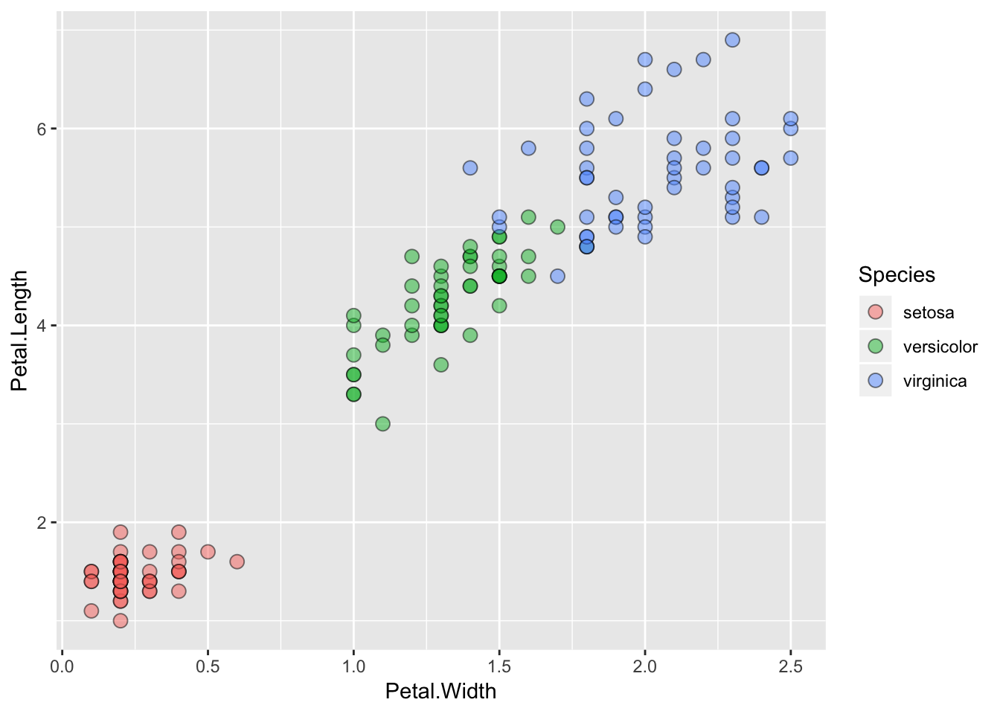
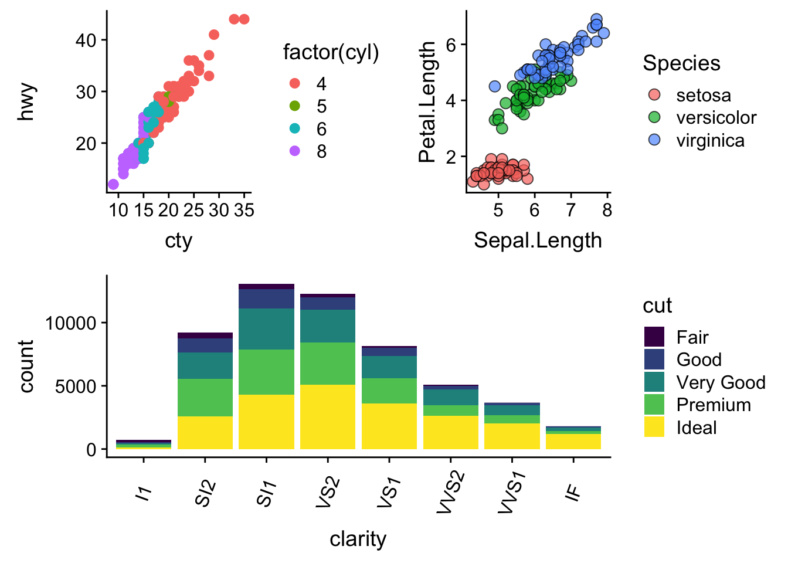

Visualization Dos & Don’ts
Visualization is a critical piece of our job as researchers. We need to communicate our findings to our peers, the public, and beyond. Bear in mind that humans are very visual—we process images 60,000 times faster than text, and nearly 90% of all the information transmitted to our brains is visual—so typically people remember far more of what they see versus what they read. Especially if that happens to be a well-designed, concise visualization of a pattern or trend. We like stories, so try to tell a story with your figure and make it stand alone.
Historical Data Visualization
Data visualization is not new. There have been many amazing maps and visualizations through the centuries. One of the common examples you may run across is Charle’s Minard’s map of the effect of temperature on Napoleon’s invaision of Russia through time. It packs 6 different types of data into one plot (distance, lat, lon, directionality, temperature, and dates). This type of plot later became known as a “Sankey plot”, and is still commonly used.

Another set of great examples includes Florence Nightingale’s coxcomb charts (1854) depicting the effect of disease on mortality of troops. It’s basically a fancy polar-diagram showing the timing of deaths (preventable) from disease in blue, and from wounds and other causes in red and black.

Another example is John Snow’s (no, not “winter is coming”) dot maps of cholera deaths in relation to the origin of drinking water sources were critical in founding the field of epidemiology.

Data Visualization in R
There are many tips and tricks that are available for the multitude of visualization packages in R. However, there aren’t as many simple rules or suggestions on what actually makes a good visualization. This starts with the “grammar of graphics”, which is the fundamental rules or principals which describe an art or science (from Wickham 2010).
“A good grammar will allow us to gain insight into the composition of complicated graphics, and reveal unexpected connections between seemingly different graphics (Cox 1978)”
Because there are so many options and methods to plot our data in R, we need to think about how we are going to represent the data, how can that data be interpreted visually, and what story it may tell.
A very nice example of this is provided by this animation (created by Darkhorse Analytics, and used in Jenny Bryan’s excellent stat545 course). It shows how simplification can make a big difference in communication.

Exploration vs. Communication
One thing to consider is what the objective is when creating a visualization or plot. When we build plots for exploratory purposes, we already know what the variables are we are using, and the objective is more about what sort of patterns the data might show. When communicating, the objective is more about providing a stand-alone snapshot which helps others understand what you are trying to convey. We’ll cover more on this when we talk about Rmarkdown.
ggplot2
While there are many visualization options in R, I believe the most comprehensive and powerful is the ggplot2 package. Much of the class has used/follows ggplot, so here’s a little background that might be useful.
- Based on Grammar of Graphics book by Leland Wilkinson hence ‘gg’
- Each part of the plot is layered or built upon the other parts (like building legos).
- Consider parts of a
ggplot2as parts of a house.- Data = The materials the house is built from (
ggplot(data=yourdata)) - Plot Type = The structure/design of your house (how will it look?) (
geom_) - Aesthetics = What the exterior looks like, i.e., the paint/decor (
aes()) - Stats = Ways to wire or plumb your house…how to tie your data together, or transform it (
stat_)
- Data = The materials the house is built from (
Color!!
There are so many options in R. It is fun to play around with color, but keep in mind not everyone sees color in the same way, and some folks cannot see certain spectrums of color (i.e., absence of blue or green receptors is common). See below for a example of what colorblindness may do…if you see numbers inside these circles, great, you have some blue/green retinal receptors.


Having said that, here’s a great cheat sheet of colors in R, it can be handy when trying to find the correct color or name of a color.
Discrete/Categorical:
For a very nice discussion about color palettes, I recommend this page from the R cookbook folks.
Additionally, check out the great ggthemes package, which has many options. One I find very helpful is using scale_color_colorblind(), which if you have 8-9 categories, may be a nice way to display your data.
Continuous: viridis
The viridis package is an excellent set of colors that better represent your data, are easier to read for those with colorblindness, and they also tend to print fairly well in grayscale.
Take a look at the vignette online!
An example:

viridis
Visualization Tips
This information isn’t meant to be comprehensive, but at minimum, it may provide some guidance when you are creating plots and figures.
Visualization Do’s
The most basic tip is keep it simple! Stick with a clean and clear message, what is your plot/figure trying to get across? Data visualization is effective when it is simple, and repackages data into a visual story that is easy to understand.
- Label appropriately and legibly, including axes, and use text to highlight important bits
- Use one color to represent each category, consider colorblind/BW friendly palettes
- Order datasets using logical heirarchy (Make it easy for reader to compare values)
- Use icons when possible to reduce unnecessary labeling
- Pay attention to scale (e.g., start axis at zero not 2.4 to 3.5)
- Include your data/outliers where possible
Visualization Don’ts
A few things to avoid (which basically relates to keeping it simple):
- Don’t try to add too much into one plot…keep it simple
- Don’t add color uncessarily unless it provides a specific function
- Avoid high contrast colors (red/green or blue/yellow)
- Don’t use 3D charts. They can make it hard to discern or perceive the actual information.
- Avoid ornamentation (shadowing, extra illustration, etc)
- Avoid more than 6 categorical colors in a layout unless you looking at continuous data.
- Keep fonts simple (avoid uncessary bold or italicization)
- Don’t try to compare too many categories or data types in one chart
Examples
Scatterplots
One of the best simple plots for examining patterns in data, but very effective. Also used when adding model trend lines.
suppressPackageStartupMessages(library(ggplot2))
plot(x=iris$Petal.Width) # single variableplot(x=iris$Petal.Width, y=iris$Petal.Length) # multiple variables
ggplot() + geom_point(data=iris, aes(x=Petal.Width, y=Petal.Length))ggplot() + geom_point(data=iris, aes(x=Petal.Width, y=Petal.Length, fill=Species), pch=21, size=3, alpha=0.5)
Lineplots
Comparing relative change in quantities across a variable like time. Note the change when we avoid facetting each line independently.
plot(EuStockMarkets)
suppressPackageStartupMessages(library(tidyverse))
EuStockMarkets_df <- data.frame(as.matrix(EuStockMarkets), date=as.numeric(time(EuStockMarkets)))
EuStockMarkets_long <- gather(data = EuStockMarkets_df, key = "Market", value="value", 1:4)
ggplot() + geom_line(data=EuStockMarkets_long, aes(x=date, y=value, color=Market))
Barplots
Comparing totals across multiple groups. Notice legibility when you stack the bars.
# code adpated from https://www.analyticsvidhya.com/blog/2015/07/guide-data-visualization-r/
suppressPackageStartupMessages(library(viridis))
barplot(iris$Petal.Length)barplot(iris$Sepal.Length,col = viridis(3, option = "A")) 
barplot(table(iris$Species,iris$Sepal.Length),col = viridis(3, option = "A")) 
Hexbins
This isn’t as commonly used, but binning data is an effective way to represent lots of pieces. Hexbins are effectively just histograms.
suppressPackageStartupMessages({
library(hexbin);
library(viridis);
library(ggplot2)
})
a=hexbin(diamonds$price,diamonds$carat,xbins=40)
plot(a)
ggplot() + geom_hex(data=diamonds, aes(x=price, y=carat), bins=40) +
scale_fill_viridis()
Publishing Plots: cowplot
A few excellent options exist for creating multi-paneled plots for publications. The first and foremost is a package by Claus Wilke called cowplot. With cowplot, it’s possible to quickly combine existing ggplots, creating publication quality plots. See the vignette for more options, but here’s a quick example from the vignette below:
library(ggplot2)
library(cowplot)##
## Attaching package: 'cowplot'## The following object is masked from 'package:ggplot2':
##
## ggsave# make a few plots:
plot.diamonds <- ggplot(diamonds, aes(clarity, fill = cut)) + geom_bar() +
theme(axis.text.x = element_text(angle=70, vjust=0.5))
#plot.diamonds
plot.cars <- ggplot(mpg, aes(x = cty, y = hwy, colour = factor(cyl))) +
geom_point(size = 2.5)
#plot.cars
plot.iris <- ggplot(data=iris, aes(x=Sepal.Length, y=Petal.Length, fill=Species)) +
geom_point(size=3, alpha=0.7, shape=21)
#plot.iris
# use plot_grid
(panel_plot <- plot_grid(plot.cars, plot.iris, plot.diamonds, labels=c("A", "B", "C"), ncol=2, nrow = 2))
# fix the sizes draw_plot
(fixed_gridplot <- ggdraw() + draw_plot(plot.iris, x = 0, y = 0, width = 1, height = 0.5) +
draw_plot(plot.cars, x=0, y=.5, width=0.5, height = 0.5) +
draw_plot(plot.diamonds, x=0.5, y=0.5, width=0.5, height = 0.5) +
draw_plot_label(label = c("A","B","C"), x = c(0, 0.5, 0), y = c(1, 1, 0.5)))Saving out plots with save_plot can be a good way to preserve or change the aspect ratio. See how changing the aspect ratio changes the output:
# save_plot can be a nice way to set the aspect_ratio...play with these options
save_plot("figures/plot2by1_11.png", fixed_gridplot, dpi=300,
ncol = 2, # we're saving a grid plot of 2 columns
nrow = 2, # and 2 rows
# each individual subplot should have an aspect ratio of 1.3
base_aspect_ratio = 1.1
)Ratio of 1.1:

ratio1.1
Ratio of 1.5
Publishing Plots: patchwork
A newer package (only available only via Github) by Thomas Pedersen is called patchwork. To install, you’ll need a package called “devtools”. See the patchwork github page section on installation for more info. The terminology used for plots is based on ggplot2, so it uses the + between things. Now, you can simply add your plots together using this terminology. Note, this doesn’t have the same lettering functionality shown above, but does make it easier to arrange your plots however you choose. Using the plots from our example above:
#devtools::install_github("thomasp85/patchwork")
library(patchwork)
# the default
plot.cars + plot.iris + plot.diamonds + plot_layout(ncol=1)# you can use a few different things to nest your plots by changin "+" to "-"
plot.cars + plot.iris - plot.diamonds + plot_layout(ncol=1)
# there are many more options should you choose them, see the github page.Additional Resources
Here’s a list of resources you may want to check out. Many of these have lots of examples and code you can try out.
- Hadley’s R for Data Science Chap. on Data Visualisation
- The Layered Grammar of Graphics
- Claus O. Wilke’s new (in progress) book Fundamentals of Data Visualization
- Top 50 ggplot2 Visualizations: A great set of examples and code for many different types of ggplots you can make
- Just to get a sense of less than ideal, see Karl Broman’s Top 10 Worst Graphs
- Some nice Tips by chart type
- More examples for Data Viz
This lesson was contributed by Ryan Peek.